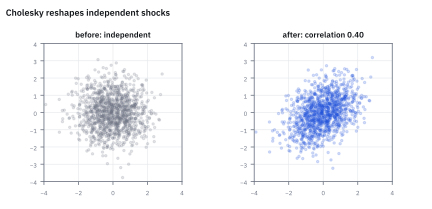
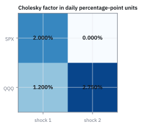
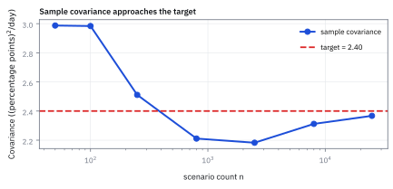
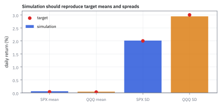

8.9 Simulating the MVN with the Cholesky Decomposition
เครื่องสุ่มให้แค่ตัวเลขที่อิสระต่อกัน Cholesky บอกสูตรผสมที่ให้ covariance ตรงเป้าพอดี
ต้องจำลองผลตอบแทนรายปีของสองสินทรัพย์ ตัวแรก SD 20% ตัวที่สอง SD 30% และ correlation 0.6 แต่เครื่องสุ่มในคอมพิวเตอร์ให้ได้อย่างเดียวคือตัวเลข standard Normal ที่อิสระต่อกัน มีคนเสนอ $r_2=0.30(0.6z_1+0.4z_2)$ เพราะ “ยืม 60% จากตัวแรก ที่เหลือ 40% เป็นของตัวเอง” จะได้ correlation 0.6 ไหม?
ลองตอบก่อนเปิดเฉลย
ไม่ได้ สูตรนั้นให้ SD ของตัวที่สอง $0.30\sqrt{0.6^2+0.4^2}\approx21.63\%$ แทน 30% และ correlation ประมาณ 0.832 แทน 0.6 น้ำหนักของสองก้อนต้องยกกำลังสองแล้วรวมได้ 1 จึงต้องเป็น 0.6 กับ 0.8 สูตรที่ถูกคือ $r_1=0.20z_1$ และ $r_2=0.18z_1+0.24z_2$ ถ้าเครื่องสุ่มได้ $z=(1.4, -0.7)$ สองสินทรัพย์จะได้ +28.0% กับ +8.4%
สิ่งที่เราจะสร้าง
8.8 เริ่มจาก joint Gaussian แล้วรวมเป็นตัวเลขตัวเดียว หัวข้อนี้เดินทางกลับ: เริ่มจากก้อนสุ่มอิสระที่สร้างง่าย แล้วประกอบเป็น vector ที่มี mean และ covariance ตามที่สั่ง นี่คือบรรทัดที่อยู่ในทุกระบบ Monte Carlo ที่จำลองหลายสินทรัพย์พร้อมกัน
เราจะแก้กรณีสองสินทรัพย์ด้วยมือก่อน แล้วค่อยเขียนเป็น matrix พิสูจน์ว่าได้ทั้ง covariance และ Normal ครบ จากนั้นขยายเป็นสามสินทรัพย์ สุ่มจริง 200,000 เส้นทาง และสุดท้ายลองป้อนตารางที่เป็นไปไม่ได้ ดูว่าวิธีนี้ร้องเตือนตรงไหน
ศัพท์ที่ใช้ในหัวข้อนี้
- Cholesky factor
- matrix สามเหลี่ยมล่าง $L$ ที่ทแยงเป็นบวกและ $LL^{\mathsf T}=\Sigma$ ใช้แปลง shocks อิสระให้เป็น shocks ที่สัมพันธ์กันตาม $\Sigma$
- Lower-triangular matrix
- matrix ที่ช่องเหนือแนวทแยงเป็นศูนย์หมด แถวที่ $i$ ใช้ shock แค่ $i$ ตัวแรก จึงแก้ได้ทีละแถวจากบนลงล่าง
- Positive definite (PD)
- covariance ที่ทุกพอร์ต $w\ne0$ มี variance $w^{\mathsf T}\Sigma w\gt0$ เป็นเงื่อนไขที่ทำให้ Cholesky ถอดรากได้ทุกขั้น ถ้ามีพอร์ตที่ variance เป็นศูนย์พอดี เรียกว่า PSD (7.6)
- Pivot
- ค่า $\ell_{jj}^2$ ก่อนถอดราก คือ variance ของสินทรัพย์ที่ $j$ ส่วนที่สินทรัพย์ก่อนหน้าอธิบายไม่ได้ ถ้าติดลบ แปลว่าตารางขัดกันเอง
- Monte Carlo
- การสุ่ม scenarios จำนวนมากแล้วเฉลี่ยผล เพื่อประมาณค่าที่ไม่มีสูตรปิด เช่นราคา derivative ที่อ้างอิงหลายสินทรัพย์ หรือ VaR ของพอร์ตที่มี options
- Seed
- ค่าตั้งต้นของเครื่องสุ่มเทียม ใส่ seed เดิมได้ลำดับตัวเลขเดิม คนอื่นจึงรันซ้ำและตรวจงานได้
สัญลักษณ์และหน่วย
| สัญลักษณ์ | ความหมาย | หน่วย |
|---|---|---|
| $z$ | vector ของ standard Normal อิสระ $d$ ตัว | ไม่มีหน่วย |
| $L,\ \ell_{ij}$ | Cholesky factor และช่องแถว $i$ หลัก $j$ | หน่วยผลตอบแทนต่อหนึ่งหน่วย shock |
| $\Sigma,\ \mu$ | covariance และ mean เป้าหมาย ในช่วงเวลาและลำดับสินทรัพย์เดียวกัน | return² และ return |
| $r$ | ผลตอบแทนจำลองหนึ่งเส้นทาง | return ของช่วงที่ระบุ |
| $p_j$ | pivot ตัวที่ $j$ คือ $\ell_{jj}^2$ | return² |
| $d,\ n$ | จำนวนสินทรัพย์ และจำนวนเส้นทางที่สุ่ม | นับ |
| $C,\ v$ | correlation matrix ที่ขัดกันเองในขั้นที่ 9 และพอร์ตที่เปิดโปงมัน | ไม่มีหน่วย |
ขั้นที่ 1 — แก้กรณีสองสินทรัพย์ด้วยมือ
ให้ตัวแรกใช้ shock ตัวเดียว ส่วนตัวที่สองใช้ shock ร่วมกับตัวแรกบางส่วน และ shock ของตัวเองบางส่วน เรายังไม่รู้ตัวคูณ $a, b, c$ แต่รู้ว่า $z_1, z_2$ อิสระกันและมี variance 1 จึงเขียน variance และ covariance ของสิ่งที่สร้างได้ทันทีด้วยสูตรขั้นที่ 1 ของ 8.8 แล้วจับให้ตรงเป้า
สามเงื่อนไข สามตัวที่ไม่รู้ และแก้ได้ทีละบรรทัด: เงื่อนไขแรกมีแค่ $a$ พอรู้ $a$ เงื่อนไขที่สองเหลือแค่ $b$ พอรู้ $b$ เงื่อนไขสุดท้ายเหลือแค่ $c$ ลำดับสวย ๆ นี้เกิดขึ้นได้เพราะเราจงใจให้ $r_1$ ไม่แตะ $z_2$ เลย
ตัวคูณของตัวที่สองคือ $0.18=0.30(0.6)$ กับ $0.24=0.30(0.8)$ และ $0.6^2+0.8^2=0.36+0.64=1$ (สามเหลี่ยม 3-4-5) variance จึงกลับมาเป็น $0.30^2$ พอดี นี่คือจุดที่สูตร 0.6 กับ 0.4 ในโจทย์เปิดเรื่องพลาด
เขียนเป็นสัญลักษณ์ได้ $b=\rho\sigma_2$ และ $c=\sigma_2\sqrt{1-\rho^2}$ ส่วน $c$ คือ SD ของตัวที่สองที่เหลืออยู่หลังรู้ตัวแรกแล้ว ตัวเดียวกับ residual SD ใน 8.7 Cholesky กับ conditional distribution จึงเป็นเรื่องเดียวกันมองคนละมุม: ตัวหนึ่งถามว่าเหลือความไม่แน่นอนเท่าไร อีกตัวถามว่าจะประกอบมันกลับอย่างไร
ขั้นที่ 2 — เส้นทางแรก: เลขสุ่มคู่เดียวให้อะไร
โจทย์ให้อะไรมาบ้าง: เครื่องสุ่มให้ $z_1=1.4$ และ $z_2=-0.7$ ซึ่งได้จากเลขสุ่มระหว่าง 0 ถึง 1 คือ 0.9192 กับ 0.2420 ผ่าน $\Phi^{-1}$ เพราะ $\Phi(1.4)\approx0.9192$ และ $\Phi(-0.7)\approx0.2420$ ถือสองสินทรัพย์อย่างละครึ่ง
คำตอบ: +28.0%, +8.4% และพอร์ตครึ่งต่อครึ่ง +18.2% สังเกตว่า $z_2$ ติดลบ แต่ $r_2$ ยังบวก เพราะแรงดึงจาก shock ร่วม 0.252 ชนะ shock ของตัวเอง 0.168 นี่คือ correlation ทำงานให้เห็นในเส้นทางเดียว
ตรวจเองใน 10 วินาที: $0.18\times1.4=0.252$ และ $0.24\times0.7=0.168$ ต่างกัน 0.084 แต่เส้นทางเดียวพิสูจน์ correlation ไม่ได้ ต้องสุ่มหลายเส้นแล้ววัดกลับ ซึ่งทำในขั้นที่ 8
ขั้นที่ 3 — เขียนเป็น matrix แล้วพิสูจน์ว่าได้ covariance ตรงเป้าทุกครั้ง
สิ่งที่ทำในขั้นที่ 1 คือหา matrix สามเหลี่ยมล่าง $L=\begin{bmatrix}0.20&0\\0.18&0.24\end{bmatrix}$ แล้วตั้ง $r=\mu+Lz$ คำถามคือทำไมวิธีนี้ให้ covariance ตรงเป้าเสมอ ไม่ใช่แค่ในตัวอย่างนี้ วิธีตอบคือคำนวณ covariance ของสิ่งที่สร้างตรง ๆ
สองบรรทัดแรกเป็นนิยามของสิ่งที่เราเลือกทำ ส่วนที่เหลือคือการตรวจ จังหวะสำคัญคือดึง $L$ ออกนอกค่าคาดหวัง ซึ่งทำได้เพราะ $L$ เป็นตัวเลขคงที่ที่คำนวณไว้ก่อนสุ่ม ตรงกลางเหลือ $\mathbb E[zz^{\mathsf T}]=I$ ทแยงเป็น 1 เพราะแต่ละ $z_k$ มี variance 1 นอกทแยงเป็น 0 เพราะอิสระกัน
สมมติฐานเรื่องเครื่องสุ่มถูกใช้ตรงนี้ที่เดียว ถ้าเลขสุ่มที่ออกติดกันมี correlation แฝง $\mathbb E[zz^{\mathsf T}]$ จะไม่ใช่ $I$ และ covariance ที่ได้จะผิดทั้งที่พีชคณิตถูกทุกบรรทัด
ขั้นที่ 4 — covariance ตรงยังไม่พอ: ทำไม r เป็น Normal ด้วย
หลายรูปทรงมี covariance เดียวกันได้ (8.3 และ pitfall ของ 8.8) ถ้าจะใช้ผลจำลองอ่านหางซ้าย เช่น VaR ต้องรู้ว่า $r$ เป็น MVN จริง เครื่องมือคือ MGF จาก 8.5 ตั้ง $u:=L^{\mathsf T}s$ เพื่อให้ $s^{\mathsf T}Lz=u^{\mathsf T}z$ แล้วใช้ความอิสระของ $z_k$ แยกค่าคาดหวังเป็นผลคูณ
บรรทัดที่สามคือจุดที่ใช้ความอิสระ: ค่าคาดหวังของผลคูณแยกเป็นผลคูณของค่าคาดหวังได้ บรรทัดที่สี่ใช้ MGF ของ standard Normal $\mathbb E[e^{tz}]=e^{t^2/2}$ แล้วผลคูณของ exponential กลายเป็นผลบวกในเลขชี้กำลัง ซึ่งก็คือ $u^{\mathsf T}u$
บรรทัดสุดท้ายคือ MGF ของ $\mathcal N(\mu,\Sigma)$ พอดี และ MGF ที่มีค่าจำกัดรอบศูนย์ระบุ distribution ได้แบบเดียว $r$ จึงเป็น MVN จริง ไม่ใช่แค่มี covariance ตรง
ขั้นที่ 5 — สูตรทั่วไป: ถอดทีละช่อง และความหมายของสิ่งที่อยู่ในราก
กรณี $d$ สินทรัพย์ทำแบบขั้นที่ 1 ทุกอย่าง แค่เขียนด้วยสัญลักษณ์ ช่อง $(i,j)$ ของ $LL^{\mathsf T}$ คือ dot product ของแถว $i$ กับแถว $j$ ของ $L$ และเพราะช่องเหนือทแยงเป็นศูนย์ ผลรวมจึงหยุดที่ $\min(i,j)$ เราไล่หลักจากซ้ายไปขวา ในแต่ละหลักแก้ช่องทแยงก่อน แล้วค่อยแก้ช่องใต้ทแยง ($i\gt j$)
บรรทัดที่สามตั้งชื่อ $p_j$ ให้สิ่งที่อยู่ในราก เรียกว่า pivot ความหมายของมันคือส่วนของ variance สินทรัพย์ที่ $j$ ที่ shock ของสินทรัพย์ก่อนหน้าอธิบายไม่ได้ ในขั้นที่ 1 pivot ตัวที่สองคือ $0.09-0.0324=0.0576$ ซึ่งก็คือ $0.24^2$
ทำไม pivot ของ $\Sigma$ ที่เป็น PD ถึงบวกเสมอ? เพราะ $p_j$ คือ variance ของพอร์ต “สินทรัพย์ $j$ ลบส่วนที่ทำนายได้จากสินทรัพย์ก่อนหน้า” ซึ่งเป็นพอร์ตหนึ่งที่น้ำหนักไม่เป็นศูนย์ ถ้า $\Sigma$ เป็น PD พอร์ตนี้ต้องมี variance บวก รากจึงถอดได้ทุกขั้น
สองบรรทัดสุดท้ายคือสิ่งที่โค้ดทำ: ช่องใต้ทแยงเอา covariance เป้าหมาย หักส่วนที่ shock ก่อนหน้าสร้างไว้แล้ว แล้วหารด้วย $\ell_{jj}$ ที่เพิ่งได้ การบังคับให้ทแยงเป็นบวกทำให้ $L$ มีคำตอบเดียว
ขั้นที่ 6 — โมเดล SPX/QQQ รายวันของ 8.7
โจทย์ให้อะไรมาบ้าง: โมเดลรายวันเดียวกับ 8.7 และ 8.8: mean $(0.0004, 0.0003)$ SD 2% และ 3% covariance 0.00024 (correlation 0.4) และหนึ่ง scenario $z=(1, -0.5)$
คำตอบ: SPX +2.04% และ QQQ ประมาณ −0.145% ทั้งที่ shock ร่วมเป็นบวก เพราะ shock ของ QQQ เองติดลบมากพอ เกิดได้จริงเพราะ correlation แค่ 0.4 ตัวเลข 0.0274955 คือ residual SD 2.7495% ที่ 8.7 คำนวณไว้ ไม่ใช่เรื่องบังเอิญ เพราะทั้งคู่คือรากของ pivot ตัวที่สอง
ตรวจเองใน 10 วินาที: $0.012^2+0.000756=0.000144+0.000756=0.0009$ ได้ variance ของ QQQ คืน และ $0.02\times0.012=0.00024$ ได้ covariance คืน
Figure 8.9a — ก่อนและหลังคูณด้วย L

Figure 8.9b — Cholesky factor ของโมเดล SPX/QQQ รายวัน

ขั้นที่ 7 — สามสินทรัพย์: ต้องหักส่วนที่แชร์ไปแล้วออกก่อน
สองสินทรัพย์ยังไม่โชว์การหักลบในสูตรทั่วไป เพราะหลักแรกไม่มีอะไรให้หัก เพิ่มสินทรัพย์ที่สามเป็นกองทุนพันธบัตรระยะยาว SD วันละ 1% covariance กับ SPX และกับ QQQ เท่ากันที่ $-0.00006$ (correlation −0.3 และ −0.2) mean ใส่ภายหลังได้โดยไม่กระทบ $L$
แถวที่สองคือหัวใจของ Cholesky: ก่อนแบ่ง covariance ระหว่างพันธบัตรกับ QQQ ให้ shock ตัวที่สอง ต้องหักส่วนที่เกิดขึ้นแล้วผ่าน shock ตัวแรกออก คือ $(-0.003)(0.012)=-0.000036$ เพราะทั้งสองสินทรัพย์รับ $z_1$ มาแล้ว ถ้าไม่หัก covariance จะถูกนับซ้ำและล้นเป้า
ภาพรวมเหมือน factor model: $z_1$ ทำหน้าที่เหมือนตลาดทั้งหมด $z_2$ คือส่วนที่ QQQ ต่างจาก SPX และ $z_3$ คือความเสี่ยงเฉพาะของพันธบัตร $\ell_{33}\approx0.95\%$ ต่อวัน ซึ่งเหลือเกือบทั้งหมดของ 1% เพราะหุ้นอธิบายพันธบัตรได้น้อย
ขั้นที่ 8 — สุ่มจริง 200,000 เส้นทาง แล้วตัดสินว่าคลาดแค่ไหนจึงปกติ
ขั้นที่ 3 และ 4 พิสูจน์ค่าของ population แต่ตัวอย่างจำกัดย่อมคลาดเคลื่อน คำถามที่ถูกจึงไม่ใช่ “ตรงเป้าไหม” แต่คือ “คลาดเท่าไรจึงปกติ” เริ่มจาก SD: ถ้า $r=\sigma z$ แล้ว $\hat\sigma^2$ คือค่าเฉลี่ยของ $\sigma^2z^2$ จำนวน $n$ ตัว ใช้ $\mathbb E[z^4]=3$ จาก 8.5 แล้วแปลงจาก variance เป็น SD ด้วยอนุพันธ์ของราก
บรรทัดที่สามใช้ว่าถ้า $\hat\sigma^2$ ขยับเล็กน้อย $\hat\sigma$ ขยับประมาณ $1/(2\sigma)$ เท่า บรรทัดสุดท้ายเป็นสูตรประมาณสำหรับตัวอย่างใหญ่ที่ใช้กันทั่วไปกับข้อมูล Normal เราไม่พิสูจน์ในหน้านี้ ใช้เป็นไม้บรรทัดเท่านั้น
| ค่า | เป้า | ได้จากการสุ่ม (seed 2024) | ห่างเป้ากี่ SE |
|---|---|---|---|
| SD ตัวแรก | 0.2000 | 0.19958 | −1.3 |
| SD ตัวที่สอง | 0.3000 | 0.29905 | −2.0 |
| correlation | 0.6000 | 0.59913 | −0.6 |
ทั้งสามตัวห่างเป้าไม่เกินราว 2 SE ซึ่งเป็นเรื่องปกติของการสุ่ม ถ้าเปลี่ยน seed ตัวเลขชุดนี้จะเปลี่ยน แต่ถ้าห่างเป็น 10 SE นั่นคือสัญญาณว่าโค้ดผิด เช่นสลับ $L$ กับ $L^{\mathsf T}$ หรือใช้ correlation แทน covariance ไม่ใช่โชคร้าย และถ้าอยากให้ SE เล็กลงครึ่งหนึ่ง ต้องเพิ่มเส้นทางสี่เท่า เพราะ SE ลดตาม $1/\sqrt n$
Figure 8.9c — sample covariance เข้าหาเป้าเมื่อเพิ่มเส้นทาง

Figure 8.9d — mean ประมาณยากกว่า SD มาก

ขั้นที่ 9 — ทำให้มันพัง: ตารางที่เป็นไปไม่ได้
Cholesky ไม่ได้แค่คำนวณ มันตรวจตารางไปด้วย ลองป้อนของผิดสองแบบ แบบแรกมีคนพิมพ์ $\rho=1.1$ ในโจทย์เปิดเรื่อง
แบบที่สองร้ายกว่า ทุก correlation อยู่ในช่วง −1 ถึง 1 แต่สามคู่คือ 0.9, 0.9 และ −0.9 เรียก correlation matrix นี้ว่า $C$ แล้วลองพอร์ต $v$ ที่ short ตัวแรกและ long อีกสองตัว
$\rho=1.1$ ทำให้ pivot ตัวที่สองติดลบ แปลว่าสินทรัพย์ที่สองต้องมี “ส่วนที่ตัวแรกอธิบายไม่ได้” ที่ variance ติดลบ ซึ่งไม่มีอยู่จริง
กรณี $C$ ทุกช่องดูปกติ แต่ขัดกันเอง: ถ้าตัวที่ 1 ไปทางเดียวกับทั้งตัวที่ 2 และตัวที่ 3 เกือบเต็มที่ ตัวที่ 2 กับ 3 ก็ต้องไปทางเดียวกันด้วย จะสวนกันที่ −0.9 ไม่ได้ พอร์ต $v$ จึงมี variance −2.4 ซึ่งเป็นไปไม่ได้ Cholesky ผ่านสองแถวแรกเพราะตาราง 2×2 มุมบนยังใช้ได้ แล้วหยุดที่แถวสามซึ่งเป็นจุดที่ความขัดแย้งปรากฏ
ขั้นที่ 10 — ซ่อม C แล้วดูว่าได้อะไรกลับมา
โจทย์ให้อะไรมาบ้าง: จากขั้นที่ 9 $C$ มี eigenvalue ติดลบ −0.8 ในทิศ $v$ วิธีซ่อมแบบง่ายที่ใช้กันคือยก eigenvalue นั้นขึ้นเป็นศูนย์ โดยบวก $0.8$ ในทิศ $v/\|v\|$ แล้วหารให้ทแยงกลับเป็น 1
คำตอบ: correlation ใหม่คือ 0.5, 0.5 และ −0.5 แต่ pivot ตัวที่สามเป็นศูนย์พอดี ตารางจึงยังแตก Cholesky แบบเคร่งครัดไม่ได้ เพราะ $v^{\mathsf T}C_{\rm fix}v=3+2(-0.5-0.5-0.5)=0$ ถ้ายอมให้ $\ell_{33}=0$ แถวที่สามของ $L$ คือ $(0.5, -0.866, 0)$ ซึ่งเท่ากับแถวหนึ่ง $(1, 0, 0)$ ลบแถวสอง $(0.5, 0.866, 0)$ สินทรัพย์ที่สามจึงเท่ากับสินทรัพย์ที่หนึ่งลบสินทรัพย์ที่สองเป๊ะทุกเส้นทาง
ตรวจเองใน 10 วินาที: ในโค้ดท้ายหน้า pivot ตัวที่สามของ $C_{\rm fix}$ คำนวณออกมาเป็น $-1.1\times10^{-16}$ ไม่ใช่ 0 เป๊ะ เพราะการปัดเศษ ตารางที่อยู่บนขอบ PSD จึงตกไปฝั่งลบได้ งานจริงจึงยก eigenvalue ขึ้นเป็นค่าบวกเล็ก ๆ แทนศูนย์ หรือหา correlation matrix ที่ใกล้ที่สุดด้วยวิธีของ Higham และต้องรายงานเสมอว่าการซ่อมเปลี่ยน correlation ทุกคู่ ไม่ใช่แค่คู่ที่ผิด
คำถามที่ควรถามออกมาดัง ๆ
ทำไมต้องสามเหลี่ยมล่าง? matrix $A$ ที่ $AA^{\mathsf T}=\Sigma$ มีได้ไม่จำกัด เอา $L$ ไปคูณ matrix หมุน $Q$ ใด ๆ ที่ $QQ^{\mathsf T}=I$ ก็ได้ $(LQ)(LQ)^{\mathsf T}=LQQ^{\mathsf T}L^{\mathsf T}=\Sigma$ และให้ distribution ของ $r$ เดียวกัน การเลือกสามเหลี่ยมล่างทำให้คำนวณง่ายที่สุด แก้ไล่จากบนลงล่างได้โดยไม่ต้องหา eigenvalue และคูณ $Lz$ ใช้แค่ครึ่งตาราง
เรียงลำดับสินทรัพย์ใหม่แล้วผลเปลี่ยนไหม? $L$ เปลี่ยน เพราะสินทรัพย์ตัวแรกคือตัวที่ได้ shock ของตัวเองทั้งหมด แต่ $LL^{\mathsf T}$ ของตารางที่เรียงใหม่ก็คือ $\Sigma$ ที่เรียงใหม่ distribution ของผลจำลองจึงเท่าเดิม สิ่งที่ห้ามทำคือใช้ $L$ ของลำดับหนึ่งกับ mean หรือน้ำหนักของอีกลำดับหนึ่ง ซึ่งเป็นบทเรียนเดียวกับ 8.1
ถ้าเก็บเส้นทางเป็นแถวในโค้ดล่ะ? หลายภาษาเก็บแต่ละเส้นทางเป็นแถว $z^{\mathsf T}$ สูตร $r^{\mathsf T}=z^{\mathsf T}L^{\mathsf T}$ จึงต้องคูณด้วย $L^{\mathsf T}$ ถ้าเผลอคูณ $L$ จะได้ covariance $L^{\mathsf T}L$ ซึ่งในโจทย์เปิดเรื่องให้ SD 26.91% กับ 24% และ correlation 0.669 แทน 20%, 30% และ 0.6 ผิดทั้งสามตัวโดยไม่มี error ขึ้นเลย
ความผิดที่อันตรายคือแบบที่รันผ่าน
ตอน Cholesky พังไม่ใช่ปัญหาใหญ่ เพราะมันร้องเตือน ที่อันตรายคือตอนที่มันรันผ่านแล้วให้ของผิด: คูณ $L$ แทน $L^{\mathsf T}$ ตามข้างบน, แตก correlation matrix แล้วลืมคูณ SD กลับ ผลทุกตัวจึงมี SD 1 คือ 100% ต่อช่วง, และใช้ covariance รายปีกับ mean รายวันในการจำลองเดียวกัน วิธีกันคือวัด mean, SD และ correlation ของผลจำลองเทียบกับ SE ทุกครั้งแบบขั้นที่ 8
อีกกับดักคือเมื่อ library แจ้งว่า matrix ไม่ PD แล้วแก้ด้วยการบวกเลขเข้าทแยงจนผ่าน การบวก $\epsilon I$ เพิ่ม variance ทุกตัวและลด correlation ทุกคู่โดยไม่ได้ตั้งใจ ต้องหาต้นเหตุก่อน เช่น correlation แต่ละคู่ประมาณจากช่วงวันที่ไม่ตรงกัน หรือมีสินทรัพย์มากกว่าจำนวนวันข้อมูล ซึ่งทำให้ sample covariance singular เสมอ
ใช้ทำอะไรบนโต๊ะจริง
บรรทัด $L=\operatorname{chol}(\Sigma)$ อยู่ใน VaR แบบ Monte Carlo ของพอร์ตที่มี options ซึ่งต้องจำลองทุก underlying พร้อมกันแล้วคำนวณ payoff ที่ไม่เป็นเส้นตรงทีละเส้นทาง อยู่ในการตั้งราคา derivative ที่อ้างอิงหลายสินทรัพย์ เช่น basket option ที่ไม่มีสูตรปิด และอยู่ใน stress test ที่อยากเห็นว่าพอร์ตแย่แค่ไหนเมื่อ shock ตลาดตัวเดียวดึงทุกอย่างลงพร้อมกัน
ต้นทุนถูกกว่าที่คิด นับจากวงรอบในขั้นที่ 5: ช่อง $(i,j)$ ใต้ทแยงต้องคูณแล้วบวก $j-1$ ครั้ง รวมทั้งตารางราว $d^3/6$ คู่ หรือ $d^3/3$ flops เมื่อนับคูณกับบวกแยกกัน ส่วนแต่ละเส้นทางคูณ $Lz$ ราว $d^2$ flops สำหรับพอร์ต 500 สินทรัพย์ แตกครั้งเดียว 41.7 ล้าน flops แล้วเส้นละ 250,000 flops สุ่ม 200,000 เส้นทางใช้ $5\times10^{10}$ flops การแตก $\Sigma$ จึงแทบไม่มีราคาเมื่อเทียบกับการสุ่ม
สามโจทย์ตรวจความเข้าใจ
1. สินทรัพย์สองตัวมี SD 10% และ 40% correlation −0.5 จงหา $L$ และผลตอบแทนเมื่อ $z=(1, 1)$
เฉลย
$\ell_{11}=0.10$, $\ell_{21}=\rho\sigma_2=-0.20$, $\ell_{22}=0.40\sqrt{0.75}\approx0.3464$ ตรวจ $0.04+0.12=0.16=0.40^2$ เมื่อ $z=(1, 1)$ ได้ $r_1=10\%$ และ $r_2=-0.20+0.3464=14.64\%$ ขึ้นทั้งคู่ทั้งที่ correlation ติดลบ เพราะ shock ของตัวที่สองเองเป็นบวกมากพอ correlation ติดลบบอกแนวโน้ม ไม่ได้บังคับทุกเส้นทาง
2. ถ้าสุ่มโจทย์เปิดเรื่องแค่ 5,000 เส้นทาง SE ของ correlation เป็นเท่าไร และต้องใช้กี่เส้นทางจึงจะได้ SE ไม่เกิน 0.001?
เฉลย
$0.64/\sqrt{5{,}000}\approx0.00905$ ค่าที่วัดได้จึงคลาดจาก 0.6 ราว ±0.009 ได้โดยไม่มีอะไรผิด ส่วนเงื่อนไข $0.64/\sqrt n\le0.001$ ให้ $\sqrt n\ge640$ คือ $n\ge409{,}600$ เส้นทาง
3. correlation matrix ที่คู่ (1,2) และ (1,3) เป็น 0.8 และคู่ (2,3) เป็น 0.2 ใช้ได้ไหม?
เฉลย
ไม่ได้ pivots คือ $1$, $1-0.64=0.36$ และ $1-0.64-\big((0.2-0.64)/0.6\big)^2\approx-0.178$ ความหมายคือ pivot ตัวที่สามไม่ติดลบก็ต่อเมื่อ $|\rho_{23}-0.64|\le0.36$ เมื่อตัวที่ 1 ผูกกับทั้งคู่ที่ 0.8 ตัวที่ 2 กับ 3 ต้องมี correlation อย่างน้อย $0.64-0.36=0.28$
คำนวณซ้ำด้วย JavaScript
รันใน Node.js ได้โดยไม่ติดตั้งแพ็กเกจ โค้ดนี้ตรวจว่าตารางสมมาตร รายงาน pivot ทุกตัวแม้ติดลบ ปฏิเสธตารางที่ pivot ไม่บวกแทนการฝืนถอดราก ใช้เครื่องสุ่มแบบมี seed เพื่อให้ทุกคนได้ตัวเลขชุดเดียวกับตารางในขั้นที่ 8 และพิมพ์ผลทุกขั้นของหน้านี้เป็น JSON บรรทัดเดียว
function checkSquare(S) {
const n = Array.isArray(S) ? S.length : 0;
if (n === 0 || [...S].some(row => !Array.isArray(row) || row.length !== n || ![...row].every(Number.isFinite))) {
throw new TypeError('Need a finite square matrix');
}
for (let i = 0; i < n; i++) for (let j = 0; j < i; j++) {
if (S[i][j] !== S[j][i]) throw new RangeError('Matrix must be symmetric');
}
return n;
}
// Pivot j is l_jj^2 before the square root: the variance left after the earlier assets.
// Computed as S = U D U^T without roots, so a negative pivot is reported, not hidden.
function pivots(S) {
const n = checkSquare(S), U = S.map(() => new Array(n).fill(0)), D = [];
for (let j = 0; j < n; j++) {
let p = S[j][j];
for (let k = 0; k < j; k++) p -= U[j][k] * U[j][k] * D[k];
D.push(p);
for (let i = j + 1; i < n; i++) {
if (p === 0) throw new RangeError(`Zero pivot ${j + 1} before the last row`);
let s = S[i][j];
for (let k = 0; k < j; k++) s -= U[i][k] * U[j][k] * D[k];
U[i][j] = s / p;
}
}
return D;
}
function cholesky(S) {
const n = checkSquare(S), L = S.map(() => new Array(n).fill(0));
for (let j = 0; j < n; j++) {
let p = S[j][j];
for (let k = 0; k < j; k++) p -= L[j][k] * L[j][k];
// A pivot within rounding of zero means PSD at best: refuse instead of dividing by ~0.
if (!(p > 1e-12 * S[j][j])) throw new RangeError(`Not positive definite: pivot ${j + 1} = ${p}`);
L[j][j] = Math.sqrt(p);
for (let i = j + 1; i < n; i++) {
let s = S[i][j];
for (let k = 0; k < j; k++) s -= L[i][k] * L[j][k];
L[i][j] = s / L[j][j];
}
}
return L;
}
const multiply = (A, B) => A.map(row => B[0].map((_, j) => row.reduce((s, x, k) => s + x * B[k][j], 0)));
const transpose = A => A[0].map((_, j) => A.map(row => row[j]));
function scenario(mu, L, z) {
if (mu.length !== L.length || z.length !== L.length) throw new RangeError('Mean, factor and shocks must match');
return mu.map((m, i) => L[i].reduce((s, x, k) => s + x * z[k], m));
}
// mulberry32: a small seeded generator, so every reader reproduces the same stream.
function uniforms(seed) {
let a = seed >>> 0;
return () => {
a = (a + 0x6D2B79F5) >>> 0;
let t = Math.imul(a ^ (a >>> 15), a | 1);
t ^= t + Math.imul(t ^ (t >>> 7), t | 61);
return (((t ^ (t >>> 14)) >>> 0) + 0.5) / 4294967296; // strictly inside (0, 1)
};
}
function simulate(mu, L, n, seed) {
if (!Number.isInteger(n) || n < 2) throw new RangeError('Need at least two paths');
const u = uniforms(seed), d = mu.length, paths = [];
let spare = null;
const normal = () => { // Box-Muller: two uniforms give two independent N(0,1)
if (spare !== null) { const z = spare; spare = null; return z; }
const radius = Math.sqrt(-2 * Math.log(u())), angle = 2 * Math.PI * u();
spare = radius * Math.sin(angle);
return radius * Math.cos(angle);
};
for (let p = 0; p < n; p++) paths.push(scenario(mu, L, Array.from({length: d}, normal)));
const mean = mu.map((_, i) => paths.reduce((s, r) => s + r[i], 0) / n);
const cov = mu.map((_, i) => mu.map((__, j) =>
paths.reduce((s, r) => s + (r[i] - mean[i]) * (r[j] - mean[j]), 0) / (n - 1)));
const sd = cov.map((row, i) => Math.sqrt(row[i]));
return {n, mean, sd, corr: cov[0][1] / (sd[0] * sd[1])};
}
function refusal(S) {
try { cholesky(S); return null; } catch (error) { return error.message; }
}
const L = cholesky([[0.04, 0.036], [0.036, 0.09]]);
const naiveSD = 0.30 * Math.hypot(0.6, 0.4);
const swapped = multiply(transpose(L), L);
const dailyS = [[0.0004, 0.00024, -0.00006], [0.00024, 0.0009, -0.00006], [-0.00006, -0.00006, 0.0001]];
const daily = cholesky(dailyS.slice(0, 2).map(row => row.slice(0, 2))), bonds = cholesky(dailyS);
const sim = simulate([0, 0], L, 200000, 2024);
const se = {sd: [0.2, 0.3].map(s => s / Math.sqrt(2 * sim.n)), corr: (1 - 0.6 ** 2) / Math.sqrt(sim.n)};
const C = [[1, 0.9, 0.9], [0.9, 1, -0.9], [0.9, -0.9, 1]], v = [-1, 1, 1];
const Cv = C.map(row => row.reduce((s, x, k) => s + x * v[k], 0));
const F = C.map((row, i) => row.map((x, j) => x + 0.8 / 3 * v[i] * v[j]));
const fixed = F.map((row, i) => row.map((x, j) => x / Math.sqrt(F[i][i] * F[j][j])));
console.log(JSON.stringify({
L, rebuilt: multiply(L, transpose(L)), path: scenario([0, 0], L, [1.4, -0.7]),
naive: {sd: naiveSD, corr: 0.036 / (0.20 * naiveSD)},
swapped: {cov: swapped, sd: swapped.map((row, i) => Math.sqrt(row[i])),
corr: swapped[0][1] / Math.sqrt(swapped[0][0] * swapped[1][1])},
daily, dailyPath: scenario([0.0004, 0.0003], daily, [1, -0.5]), bonds, bondPivots: pivots(dailyS),
sim, se, zScores: [(sim.sd[0] - 0.2) / se.sd[0], (sim.sd[1] - 0.3) / se.sd[1], (sim.corr - 0.6) / se.corr],
flops: {once: 500 ** 3 / 3, perPath: 500 ** 2},
rho11: {pivots: pivots([[0.04, 0.066], [0.066, 0.09]]), refusal: refusal([[0.04, 0.066], [0.066, 0.09]])},
inconsistent: {pivots: pivots(C), Cv, vCv: v.reduce((s, x, i) => s + x * Cv[i], 0), refusal: refusal(C)},
fixed: {matrix: fixed, pivots: pivots(fixed), refusal: refusal(fixed)},
exercises: {negative: cholesky([[0.01, -0.02], [-0.02, 0.16]]),
negativePath: scenario([0, 0], cholesky([[0.01, -0.02], [-0.02, 0.16]]), [1, 1]),
paths: {at5000: 0.64 / Math.sqrt(5000), forSE001: (0.64 / 0.001) ** 2},
impossible: pivots([[1, 0.8, 0.8], [0.8, 1, 0.2], [0.8, 0.2, 1]])}
}));ที่มาที่ไป
André-Louis Cholesky เป็นนายทหารฝรั่งเศสที่ทำงานรังวัดแผนที่ งานรังวัดให้สมการ least squares ที่ต้องแก้ด้วยมือ ซึ่ง matrix ด้านซ้าย $A^{\mathsf T}A$ สมมาตรและ PD เขาใช้สมบัตินี้แยกตารางเป็น $LL^{\mathsf T}$ ซึ่งใช้งานคำนวณราวครึ่งหนึ่งของ Gaussian elimination ทั่วไป เขาเสียชีวิตในสงครามโลกครั้งที่หนึ่งเมื่อปี 1918 และวิธีนี้ถูกตีพิมพ์ภายหลังโดย Commandant Benoît เพื่อนร่วมหน่วยในปี 1924 วิธีที่คิดขึ้นเพื่อทำแผนที่จึงกลายเป็นเครื่องมือหลักของการจำลองความเสี่ยงหลายสินทรัพย์
ข้อจำกัด: วิธีนี้สมมติอะไร และของจริงเป็นอย่างไร
| เรื่อง | วิธีนี้สมมติว่า | ของจริง | ผลเวลาใช้งาน |
|---|---|---|---|
| รูปทรงหาง | ความเกี่ยวพันทั้งหมดอยู่ใน $\Sigma$ และทุกอย่างเป็น Normal | ในวิกฤตหลายสินทรัพย์ดิ่งพร้อมกันบ่อยกว่าที่ Gaussian บอก | หางของผลจำลองบางเกินจริง ต้องใช้ t-copula หรือ model ที่สลับสภาวะตลาด |
| ความคงที่ | $\Sigma$ ตัวเดียวใช้ได้ทุกช่วง | correlation มักพุ่งขึ้นในช่วงตลาดตก | ต้อง stress $\Sigma$ แยก ไม่ใช่ใช้ค่าเฉลี่ยระยะยาวอย่างเดียว |
| ตารางใช้ได้ | $\Sigma$ เป็น PD | ตารางที่ประมาณแยกคู่ หรือมีสินทรัพย์มากกว่าจำนวนวันข้อมูล อาจไม่ PD | การซ่อมเปลี่ยน correlation ทุกคู่ ต้องรายงานสิ่งที่เปลี่ยน |
| จำนวนเส้นทาง | สุ่มมากพอ | ผลมี sampling error เสมอ | รายงาน SE คู่กับผลทุกครั้ง (17.5) |
สิ่งที่ควรตอบได้หลังอ่าน
- Cholesky หา $L$ สามเหลี่ยมล่างที่ $LL^{\mathsf T}=\Sigma$ แล้ว $r=\mu+Lz$ ได้ covariance $\Sigma$ เพราะ $\mathbb E[zz^{\mathsf T}]=I$ และได้ MVN เพราะเป็นผลรวมเชิงเส้นของ Normal อิสระ
- สองสินทรัพย์: $r_2=\sigma_2(\rho z_1+\sqrt{1-\rho^2}\,z_2)$ น้ำหนักสองก้อนยกกำลังสองแล้วรวมได้ 1 ไม่ใช่รวมกันตรง ๆ ได้ 1
- pivot $p_j$ คือ variance ส่วนที่สินทรัพย์ก่อนหน้าอธิบายไม่ได้ ถ้าติดลบ ตารางขัดกันเอง และการซ่อมเปลี่ยนทุกคู่
- ผลสุ่มต้องเทียบกับ SE ไม่ใช่เทียบว่าตรงเป้าเป๊ะ: 200,000 เส้นทางให้ SE ของ correlation ราว 0.0014
- ความผิดที่อันตรายคือแบบที่รันผ่าน: $L$ กับ $L^{\mathsf T}$ สลับกัน ลืมคูณ SD และลำดับสินทรัพย์ไม่ตรงกัน
บทที่ 9 ใช้ shock อิสระแบบเดียวกันนี้ แต่เรียงต่อกันตามเวลาแทนเรียงตามสินทรัพย์ แล้วสร้าง Brownian motion จากผลรวมของมัน